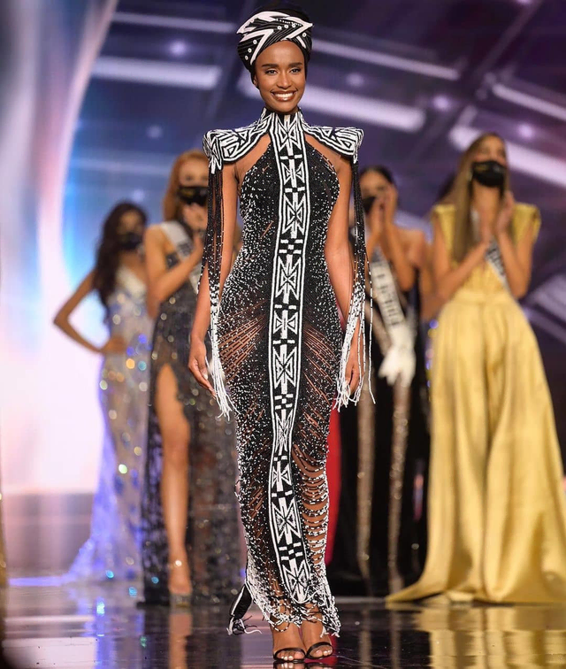

Zozibini Tunzi (sinh ngày 18 tháng 9 năm 1993) là một người mẫu và nữ hoàng sắc đẹp người Nam Phi đã đăng quang Hoa hậu Hoàn vũ 2019. Năm 2019 cô đại diện Nam Phi tham gia đấu trường Hoa hậu hoàn vũ 2019 và xuất sắc đăng quang ngôi vị hoa hậu. Tunzi được sinh ra ở Tsolo, Đông Cape với cha mẹ Philiswa Nadapu và Lungisa Tunzi, và lớn lên ở ngôi làng Sidwadweni gần đó. Tunzi là con cả trong ba chị em.[4] Sau đó, cô chuyển đến Cape Town, định cư ở vùng ngoại ô Gardens, để theo học Đại học Công nghệ Cape Peninsula, nơi cô tốt nghiệp với bằng cử nhân về quan hệ công chúng và quản lý hình ảnh vào năm 2018.
Trước khi giành chiến thắng Hoa hậu Nam Phi, Tunzi đã hoàn thành bằng Cử nhân Công nghệ về quản lý quan hệ công chúng tại Đại học Công nghệ Cape Peninsula và làm nghiên cứu sinh tại khoa quan hệ công chúng của Ogilvy Cape Town.
Tunzi bắt đầu thi hoa hậu vào năm 2017, cô được tiến vào một trong 26 thí sinh bán kết của Hoa hậu Nam Phi 2017 nhưng cô không được chọn vào Top 12. Hai năm sau, cô trở lại cuộc thi sắc đẹp để dự thi cuộc thi Hoa hậu Nam Phi 2019. Trong các vòng thi ban đầu, Tunzi đã được chọn vào Top 35 thí sinh bán kết vào ngày 26 tháng 6 năm 2019. Sau khi trải qua tiếp các vòng thi phụ, Tunzi đã được công bố là một trong 16 người vào chung kết vào ngày 11 tháng 7.

Sau khi được chọn là một trong những người vào chung kết, Tunzi tiếp tục tham gia cuộc thi Hoa hậu Nam Phi 2019 tại Pretoria vào ngày 9 tháng 8[13]. Cô đã vượt qua các vòng thi của trận chung kết, tiến lên Top 10, rồi Top 5, và cuối cùng là Top 2 cho đến khi cô được trao giải người chiến thắng bởi người tiền nhiệm Tamaryn Green, đánh bại Á hậu là Sasha-Lee Olivier[14][15]. Sau chiến thắng của mình, Tunzi đã nhận được các giải thưởng bao gồm 1 triệu Rand, một chiếc xe mới và một căn hộ đầy đủ tiện nghi trong khu phố Sandton của thành phố Johannesburg, trị giá 5 triệu Rand để cô sử dụng trong suốt nhiệm kì của mình[16]. Với thành tích của mình, Tunzi đại diện cho Nam Phi tại cuộc thi Hoa hậu Hoàn vũ 2019.
Hoa hậu Hoàn vũ
Tunzi đến Atlanta, Georgia tham dự Hoa hậu Hoàn vũ 2019 vào tháng 11 năm 2019. Cô đã tham gia vòng thi sơ khảo vào ngày 6 tháng 12, và thi đấu trong trận chung kết vào ngày 8 tháng 12 tại Phim trường Tyler Perry. Trong cuộc thi, Tunzi đã vào Top 20 với tư cách là thí sinh vào vòng bán kết đầu tiên cho khu vực Châu Phi và Châu Á-Thái Bình Dương. Sau đó, cô tiến lên Top 10, rồi Top 5, và cuối cùng là Top 3. Kết thúc sự kiện, Tunzi đã đăng quang Hoa hậu Hoàn vũ 2019 và được trao vương miện bởi Catriona Gray của Philippines. Hai Á hậu lần lượt là Á hậu 1 Madison Anderson của Puerto Rico và Á hậu 2 Sofía Aragón của México.
Chiến thắng của Tunzi là chiến thắng Hoa hậu Hoàn vũ lần thứ ba của Nam Phi; cô là người phụ nữ da đen đầu tiên giành được danh hiệu Hoa hậu Hoàn vũ kể từ khi Leila Lopes đăng quang Hoa hậu Hoàn vũ 2011, và là người đầu tiên làm điều đó với mái tóc có phong cách châu Phi. Trong phần thi cuối, Tunzi được hỏi về những gì cô tin rằng các cô gái trẻ ngày nay nên được dạy điều gì nhiều nhất, cô tự tin trả lời rằng đó là sự lãnh đạo và do xã hội nên ngày nay họ đang tránh các vị trí của nhà lãnh đạo.
"Tôi nghĩ việc quan trọng nhất chúng ta nên dạy cho các bé gái ngày nay là tinh thần lãnh đạo. Đó là điều mà các cô gái trẻ và những người phụ nữ thiếu hụt trong suốt thời gian dài. Điều đó không phải vì chúng ta không muốn, mà bởi vì những định kiến xã hội thường áp đặt lên phụ nữ. Tôi nghĩ rằng phụ nữ là những người mạnh mẽ nhất trên thế giới. Phụ nữ nên được trao tất cả cơ hội họ xứng đáng có. Và điều chúng ta cần dạy cho các bé gái là giành được vị trí của mình trong xã hội. Không có điều gì quan trọng hơn là chính bản thân mình và có được vị trí riêng trong xã hội"
—Zozibini Tunzi